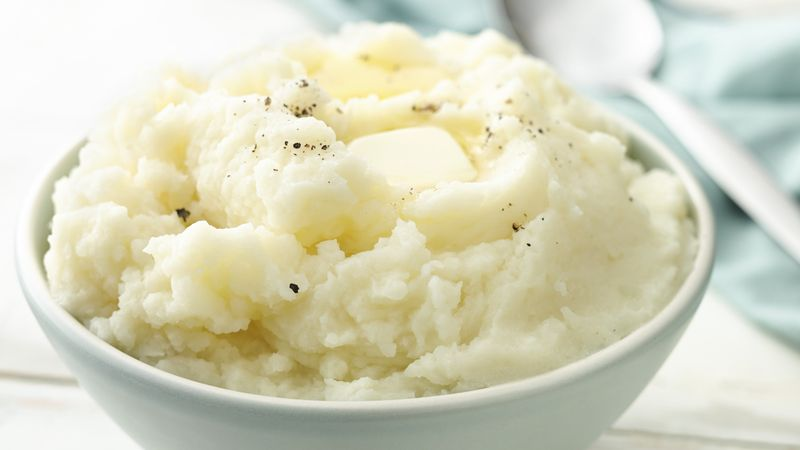

Mashed Potatoes

| Prep Time: |
15 min |
| Total Time: |
45 min |
Description
Another holiday classic. This dish is just some simple, fluffly, creamy mashed potatoes.
Ingredients
- 5-6 medium sized russet potatoes
- 1/2 cup of milk
- 4 Tablespoons of butter
- Salt and pepper to taste
Instructions
- Peel, wash, and cut potatoes into even, inch-sized cubes and place in a bowl of water to soak for 5 min
- Place potatoes in a pot and cover with water. Let boil until potatoes are soft
- Drain potatoes and mash until there is an even consistancy
- Add your milk and butter, stirring to incorporate until potatoes are nice and smooth
- Enjoy!
Home
Top of Page